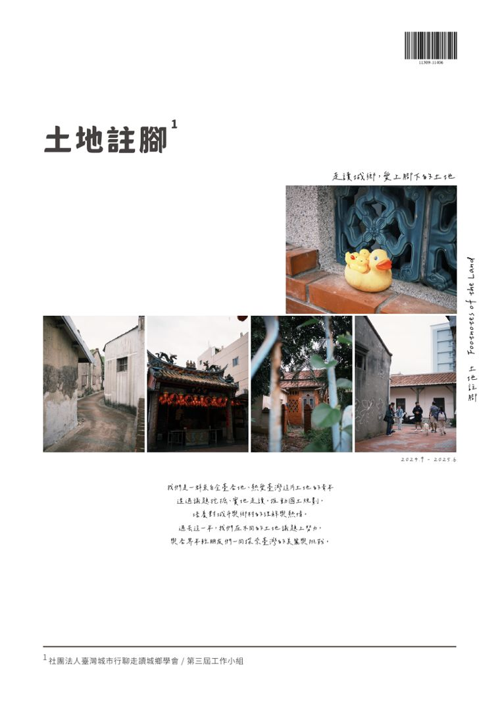
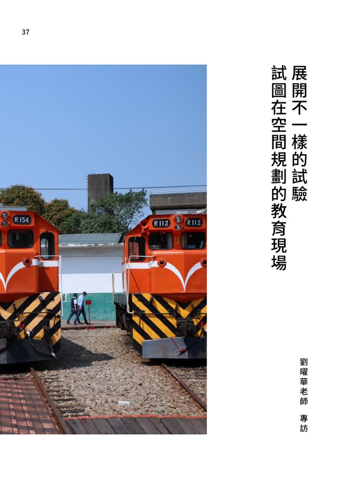

2024.09・社會住宅
共融．共榮：社會住宅與原社區的相互包容
每月議題的第一篇，延續第三屆的住宅主題。社宅推動時常遇到「鄰避效應」，居民擔心交通、治安與房價受影響；有效的解方是建立多元的共融機制，讓社宅與原社區互補共生。
- 問題：社區反對、利益與回饋爭議、社區共融
- 案例：高雄凱旋青樹、臺中公園一期社宅（將三合院「埕」導入設計，留設 48 處公共場域）、荷蘭社會住宅與「住宅法人」
- 存量對比（2018）：臺灣 0.121%、臺北市 0.803%，荷蘭 32%、阿姆斯特丹 46%
首頁 ／ 學會刊物
Footnotes of the Land・走讀城鄉，愛上腳下的土地
第 1 期・2024.9–2025.6・第三屆工作小組我們是一群來自全臺各地、熱愛臺灣這片土地的青年，透過議題挖掘、實地走讀推動國土規劃，培養對城市與鄉村的理解與熱情。這一期整理了第三屆讀書會一整年的活動、時事分享、每月議題，以及劉曜華老師的專訪。

《土地註腳》是第三屆讀書會的活動成果刊物，由社團法人臺灣城市行聊走讀城鄉學會第三屆工作小組編寫。刊物分成四個部分：活動紀錄、時事分享、議題探討與訪談，把讀書會一年來讀過、走過、討論過的事情留下紀錄。
編者／校對馬靖恩、盧科樺、葉侑嘉、陳宥翔、王騰德、賴嘉怡、李亭葦、余東威、王韻蓉、廖宜柔、王昱權、雷承霖、歐彥伶、張天欣、陳彥均
封面設計・內頁排版李亭葦
協助出版睿誼工程顧問股份有限公司
第三屆從住宅政策、都市更新、鄉村地區整體規劃到原住民土地，每一場都寫進了刊物。點活動名稱可以到對應的主題頁看完整內容。
讀書會在社群上分享與空間規劃有關的時事，刊物整理成四個面向：
從 2024 年 9 月開始，讀書會推出「每月議題」，每個月挑一個主題寫成一篇文章。以下是各篇的摘要。
2024.09・社會住宅
每月議題的第一篇，延續第三屆的住宅主題。社宅推動時常遇到「鄰避效應」，居民擔心交通、治安與房價受影響；有效的解方是建立多元的共融機制，讓社宅與原社區互補共生。
住宅與土地使用
在臺灣，新蓋的公寓一樓也常被當成店面，這在某些國家卻很少見。文章從住商分離（single-use zoning）的起源，談到臺灣帶狀分布的商業與條列式許可制的土地使用管制。
環境與氣候變遷
從 2015 年的《溫室氣體減量及管理法》到 2023 年更名為《氣候變遷因應法》，臺灣把 2050 淨零排放入法。文章整理它對政府與企業的影響，以及中央政策如何落實到地方城鄉。
土地與農業
《國土計畫法》延後實施之際，雲林縣政府提出「農業權」，希望保障農地價值與農民權益。文章並陳地方政府、中央與農民三方的立場。
土地、徵收與法制
全國各級法院審理自辦市地重劃的裁判書超過五千件。文章先釐清公辦與自辦重劃的差異，再以高雄大樹湖底自辦重劃案為例（已遭檢方起訴、重劃暫停），談「二分之一多數決」的爭議。
2025.04・環境與氣候變遷
碳匯是儲存二氧化碳的「倉庫」。文章比較森林、濕地、海洋等自然碳匯與碳捕捉封存（CCUS）等人工碳匯，並說明國土功能分區與都市成長邊界在碳匯保育上扮演的角色。

「你學都市計畫，卻從沒用都市計畫的眼睛看過你住的地方嗎？」這是劉曜華老師常對學生拋出的問題。這篇專訪〈試圖在空間規劃的教育現場展開不一樣的試驗〉，談他從文學走進規劃的路，也談教育的困境、學生的茫然與制度的盲點。
劉曜華老師大學唸外文系，到美國先讀國際政治，一次和佛羅里達大學都市計畫研究所主任的對談，才讓他走進規劃。
「人的因素一旦進來，規劃就不再只是工學院的技術問題。」
回臺後，他追溯臺灣規劃教育的來處：日治時期的空間統制、戰後的聯合國技術移植，到 1980 年代以降民間聲音的興起。
「我們不能只是做半套。我們畫的每一張圖、做的每一次規劃，背後都關係到人民的權益與生活。」
他早已放棄傳統的期中期末考，改採重視參與過程的課程，也常要求學生寫下心得。
「我不是要他們交出完美的答案，而是希望他們留下過程的痕跡。」
他多年反覆練習的，是讓學生用規劃者的角度理解自己住的地方，再一層一層往外擴張。
「如果你可以講出讓南崁人都驚訝的南崁，那麼你也有可能用同樣的方法理解臺南。」
他把規劃教育的演變比喻成畫畫比賽、算術比賽與演講比賽，並提醒課程不能只會「加東西」。
「不管畫圖、算數、演講，還是未來可能出現的第四種比賽，最終都要回到人的現場。」
以上引文摘自《土地註腳》第 1 期專訪。